It Is Finished
The first time the Bible says finished, nothing was broken yet.

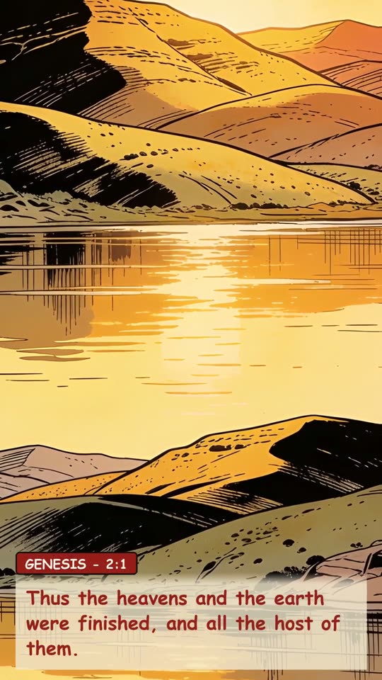
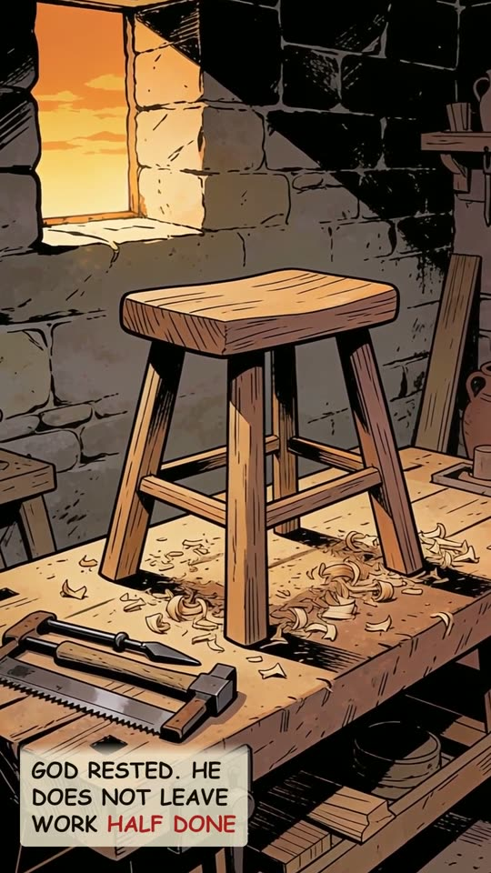
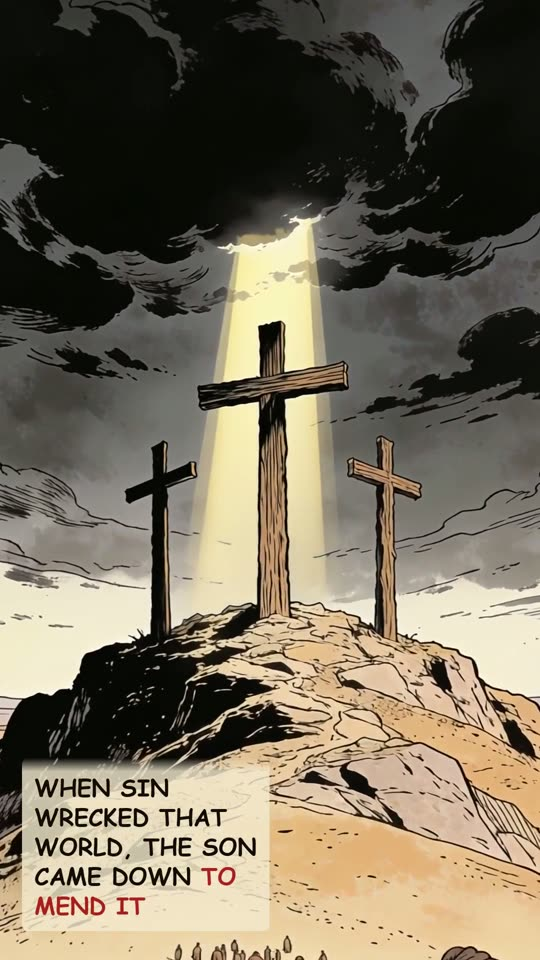
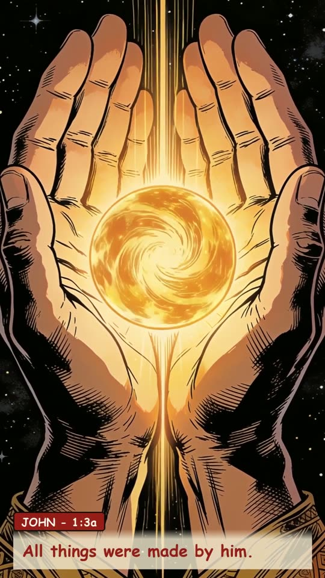
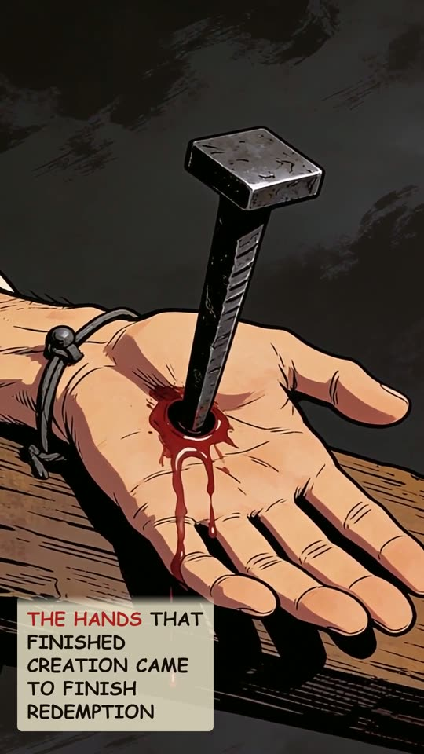
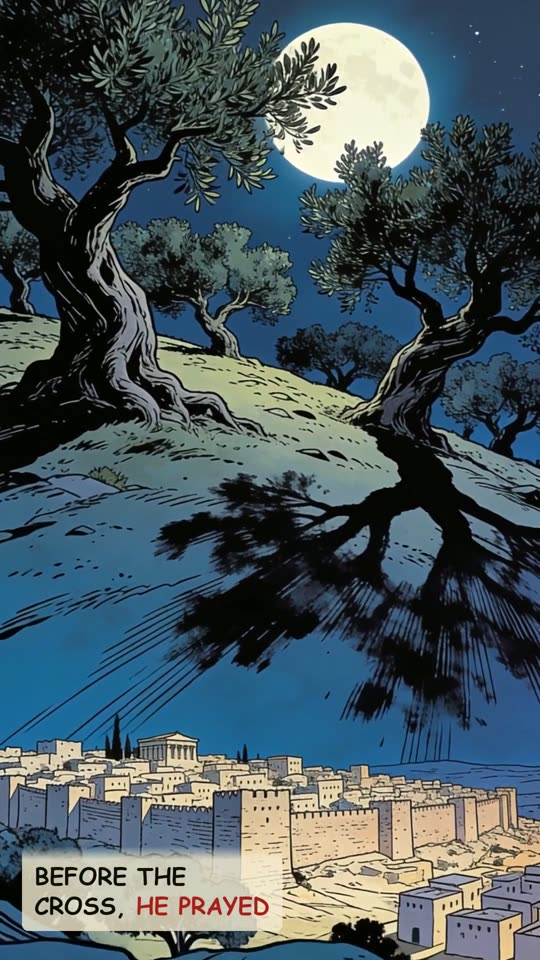
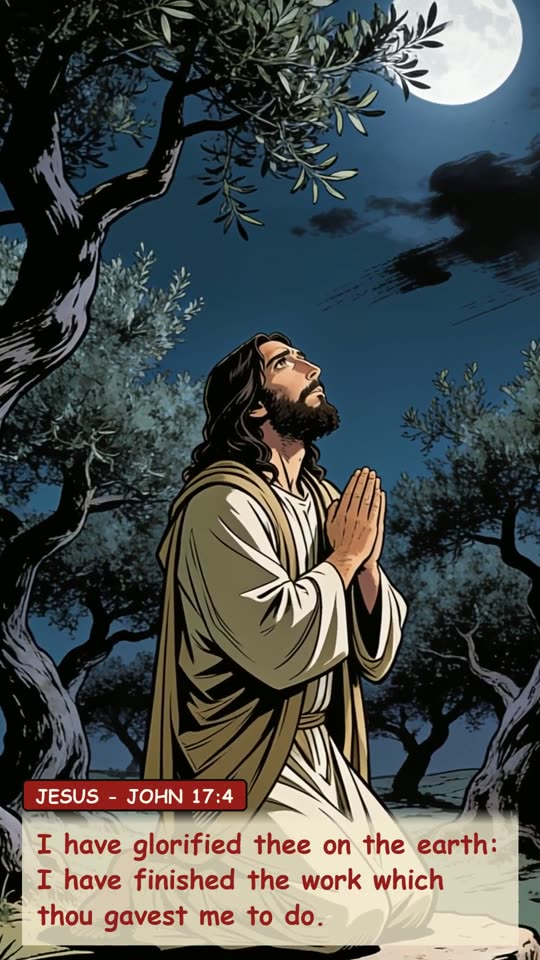
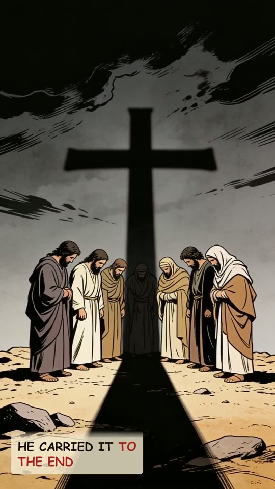
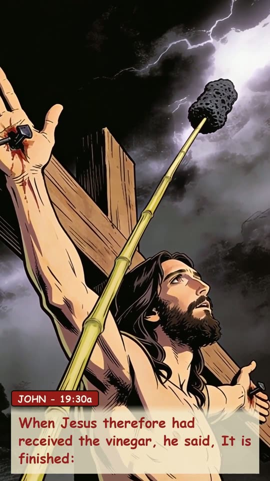
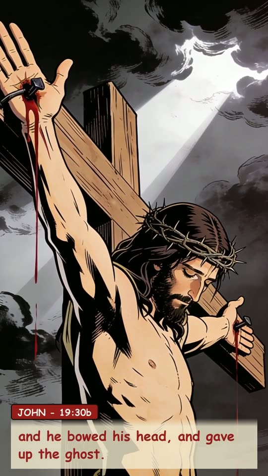
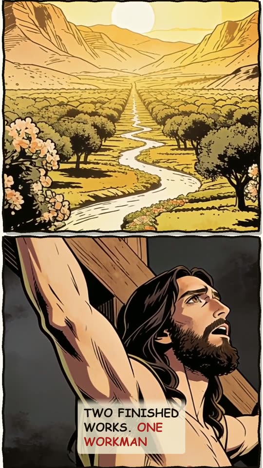
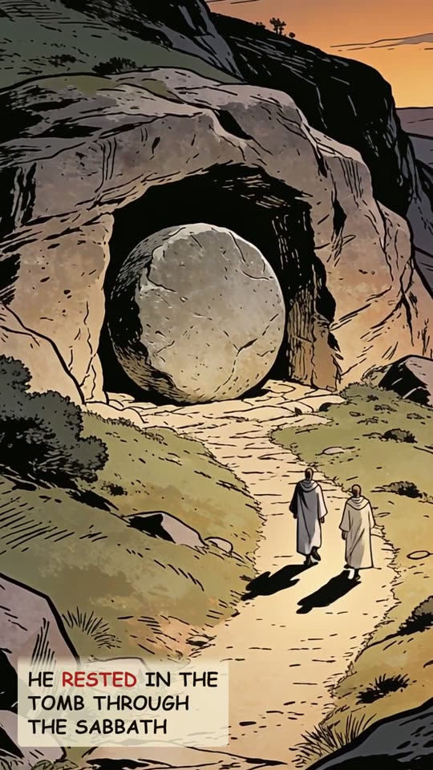
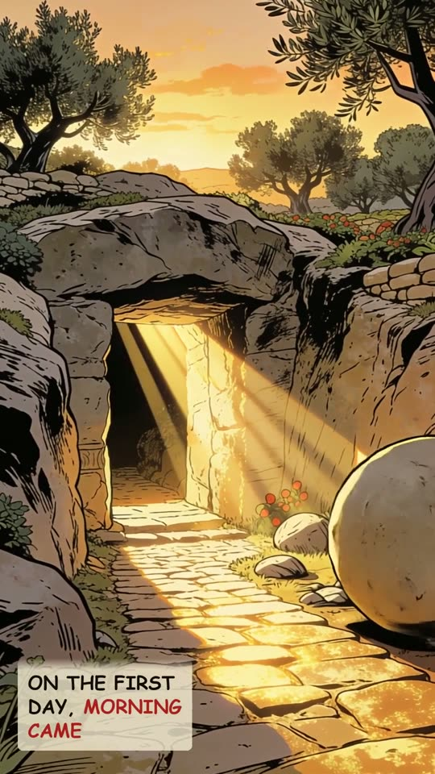
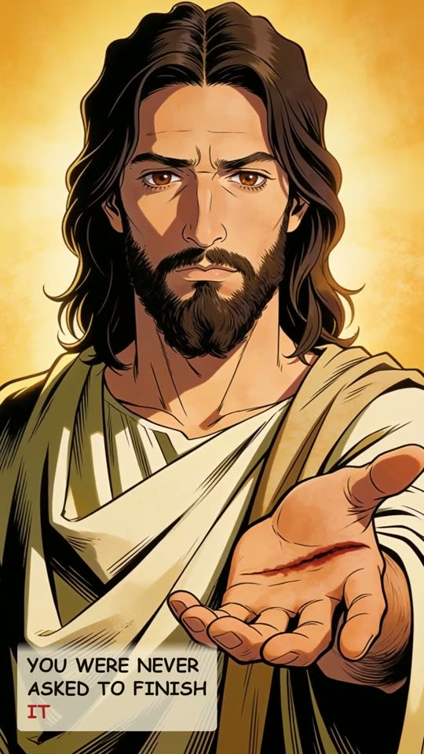
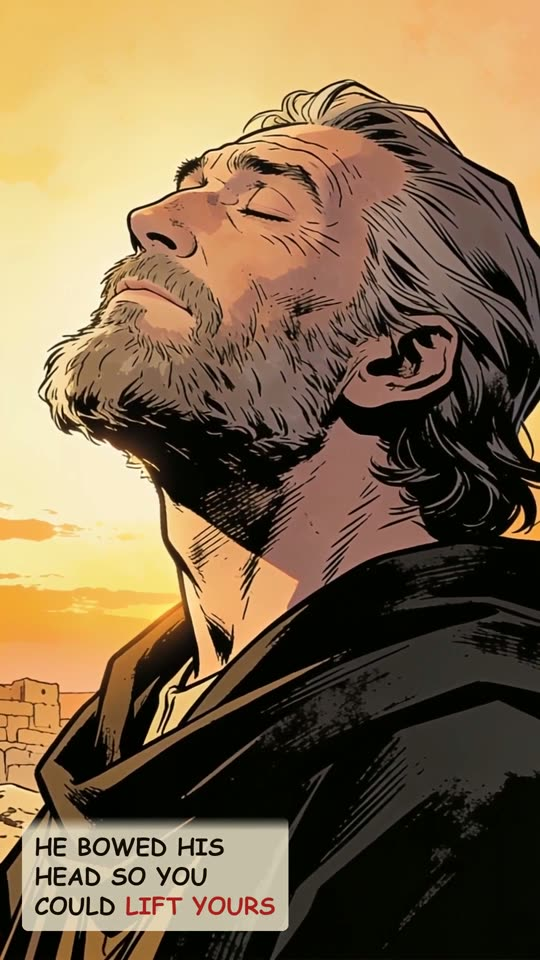
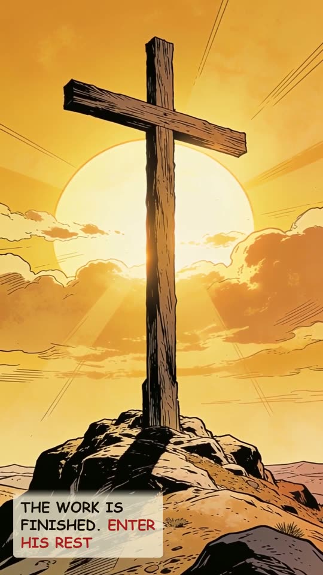
The narration
The first time the Bible says finished, nothing was broken yet. Thus the heavens and the earth were finished, and all the host of them. Creation complete. God rested. He does not leave work half done. When sin wrecked that world, the Son came down to mend it. The Bible says of Jesus: All things were made by him. The hands that finished creation came to finish redemption. Before the cross, he prayed. I have glorified thee on the earth: I have finished the work which thou gavest me to do. He carried it to the end. When Jesus therefore had received the vinegar, he said, It is finished: and he bowed his head, and gave up the ghost. Two finished works. One Workman. He finished creation, and rested. He finished redemption, and rested in the tomb through the sabbath. And on the first day, morning came. You were never asked to finish it. You are asked to rest in it. He bowed his head so you could lift yours. The work is finished. Enter his rest.